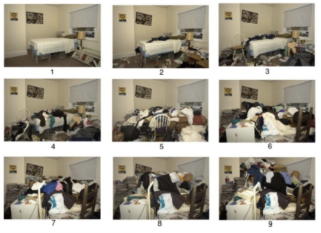

CIR (Clutter Image Rating) Mobile App
Overview
Excess clutter can be a manifestation of Hoarding Disorder, Schizophrenia, and other health disorders. A cluttered room can be a safety as well as health risk. These problems can affect patients as well as clinicians, public housing professionals, and emergency first responders. The clutter image rating is a scale from 1 - 9 that describe how cluttered a room is with 9 being the most cluttered. The current method of rating clutter manually by a trained professional is labor intensive and can be biased. To save on labor as well as reduce bias a CNN was developed by the PhD student Ozan Tezcan.

For this project, I worked with four other ECE students along with professors from the ECE and Clinical Practice department at BU.
Our goal was to develope a cross-platform mobile app that is based on the deep learning algorithm to
automatically provide a CIR (Clutter Image Rating) of a room to rate how cluttered it is, to eventually assist
with diagnosis and treatment of Hoarding Disorder.
The front-end of the app is developement using React Native while the camera component is developed using Expo SDK.
The open authorization is done using Google Firebase API. For the back-end, we used Google Firebase.
Detailed report can be found here.
PowerPoint can be found here.